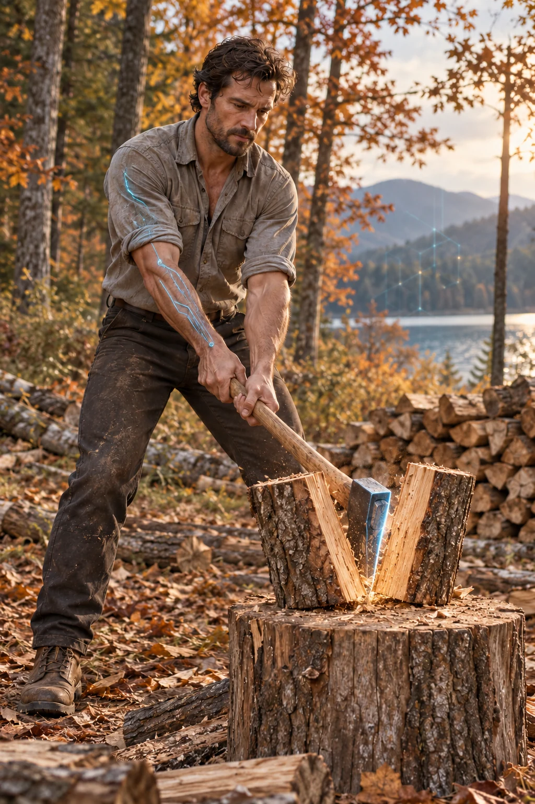

COOL WATERWARM SPARKS
AI-created adult characters · illustrative artwork, never member profiles
THE CHEMISTRY DIAL / No. 01
A little cool.
A little fire.
Lagoon light meets woodland sparks.
Turn the brass. Find your balance.
LAGOONWOODLAND
A little of both
Drag the needle or tap the dial. Arrow keys fine-tune; Home and End show each portrait.
YOUR BLEND. YOUR PREFERENCE.
How shall it feel?
Choose your style to see complementary fictional introductions nearby.
Choose your preference to see demo introductions.
Your choice is kept only in this tab. No account or public profile is created.
This is your own preferred style, not a demand on anyone else. Demo suggestions are illustrative, not a promise of compatibility or consent.
An introduction. An imagination.
Every next step is yours to choose.